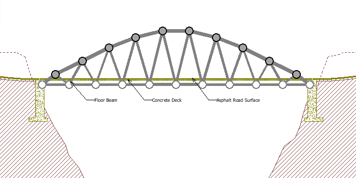
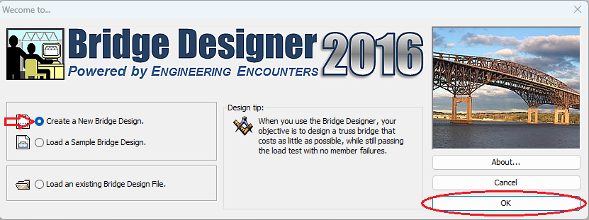
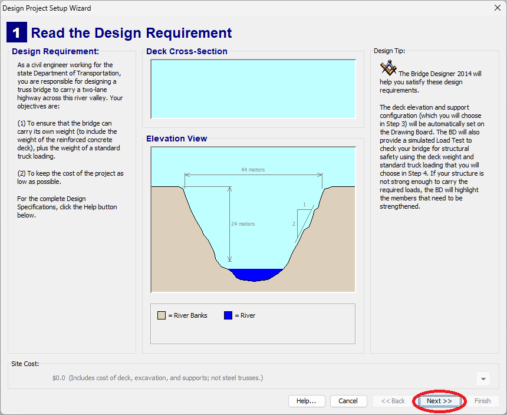
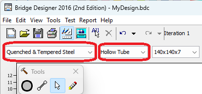
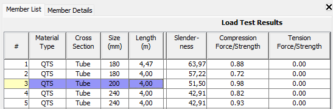

10. Ejercicio Warren no uniforme¶
El objetivo de este ejercicio es terminar un puente de estilo Warren no uniforme, que aumenta su altura en el centro.


Configurar¶
Abrir el programa Bridge Designer en el ordenador y clicar en
Create a New Bridge Designy luego en el botón OK.
En la primera pantalla de diseño, clicar simplemente el botón Next>>.

En la segunda pantalla de diseño:
- Clicar en
6-character Local Contest Code - Introducir el código BRI02A en el cuadro de texto
- Clicar en el botón Next>>
En el caso de que el botón Next>> no se pueda clicar, habrá que introducir de nuevo el código BRI02A.
- Clicar en
En la siguiente pantalla de diseño:
- Clicar <none> en la plantilla a aplicar
- Clicar Finish para terminar la configuración
En la siguiente pantalla aparecerá la carretera sobre la que vamos a construir el puente.


Construcción del puente¶
Para ahorrar material, vamos a escoger
Hollow Tube(barras huecas que soportan mejor el pandeo) y materialQuenched & Tempered Steel. Este material es más caro, pero permite utilizar menos cantidad para conseguir la misma resistencia, con un ahorro final.
Para continuar, colocaremos las nuevas juntas y barras en forma de triángulos Warren no uniformes, como puede verse en el la siguiente imagen.
Simulación¶
Ahora podemos probar el funcionamiento de nuestro puente con el simulador. Para ello, clicaremos en el botón de simulación.
En la parte inferior del puente las barras de color azul indican que están sometidas a tracción.
Como el puente se caerá, es necesario volver a la ventana de diseño para reforzar las barras.
Otra vez en la ventana de diseño podemos ver cómo están señaladas con rayas rojas las barras sometidas a demasiada compresión y con rayas azules las barras sometidas a demasiada tracción.
Estas barras hay que reforzarlas con un mayor grosor para que el puente resista su propio peso y también el paso del camión.
Reducción del coste¶
Una vez que el puente resiste el paso del camión, el objetivo será reducir su coste todo lo posible.
Otra herramienta que podemos utilizar para visualizar el estado de las barras y reducir su tamaño es la ventana derecha del simulador. En esta ventana aparecen las tensiones de tracción y de compresión de cada una de las barras del puente con un coeficiente que va desde el 0 hasta el 1:
- Si alguno de los dos coeficientes es mayor que 1, significa que la barra tiene mayor tensión que la que puede soportar y se romperá.
- Si el coeficiente es menor que 1, por ejemplo 0.70, significa que la barra soporta poca tensión y por lo tanto se puede hacer más fina sin peligro de que se rompa, ahorrando costo de material.

En la imagen se muestra seleccionada la barra 3, que soporta un esfuerzo de compresión de 0.98 (en el límite de rotura). Esta barra ya está optimizada y no se debe cambiar de grosor.
Sin embargo la barra 2 soporta un esfuerzo de compresión de 0.72 por lo que se puede reducir su grosor y hacerla más fina para ahorrar costo de material.
El objetivo ahora es conseguir que el puente resista con el menor precio posible, reduciendo el grosor de todas las barras que tengan tensiones menores que 1.
Puntuación¶
Para saber tu puntuación, pregunta cuál es el precio más bajo del puente e introduce el valor en la primera casilla. Después introduce el precio conseguido en tu puente en la segunda casilla y la puntuación obtenida aparecerá debajo, en la tercera casilla.